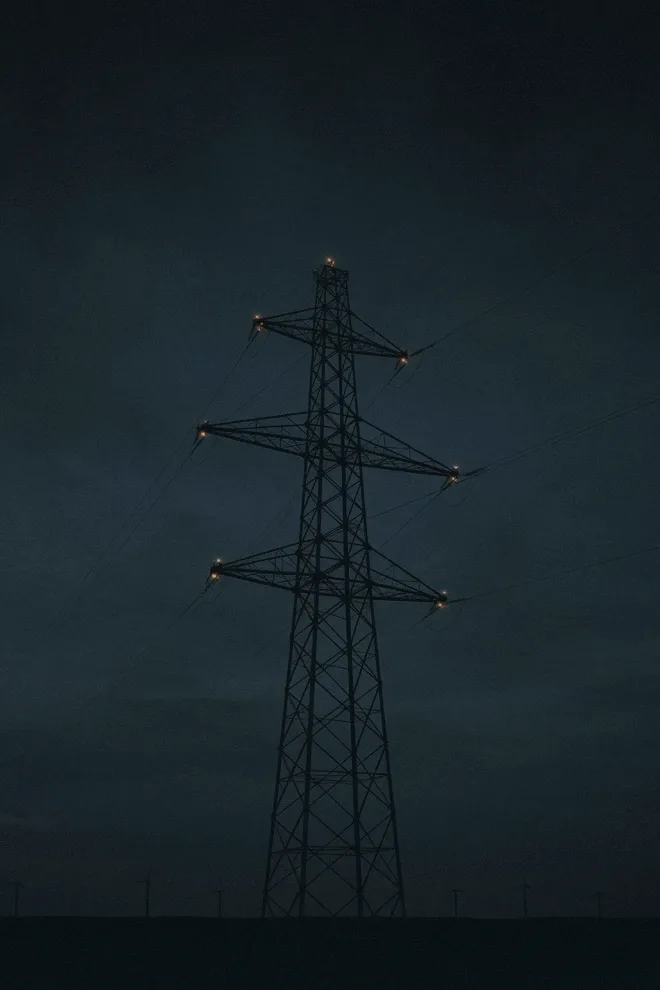
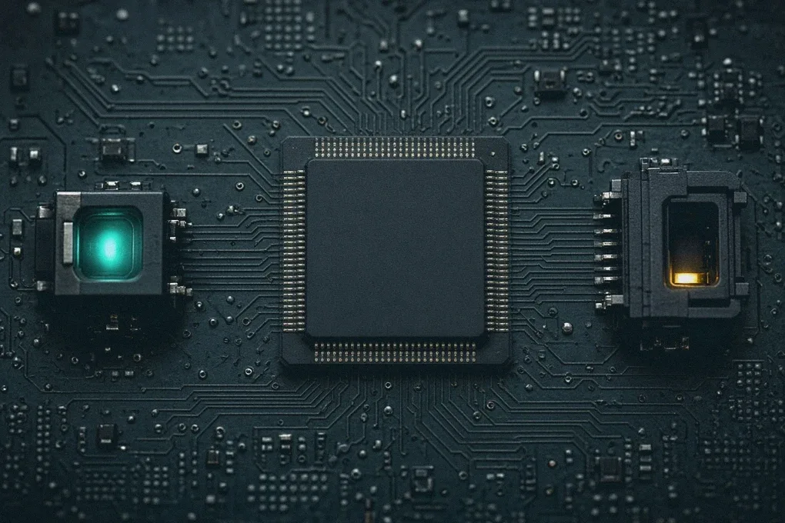

Kapløbet
Det hurtigste led venter på det langsomste
Serverne og bygningen kan være klar, længe før strømmen er det. Søjlerne viser, hvor lang tid hvert led typisk tager ifølge IEA, målt i år.
Ventetiden på transformere og kabler er næsten fordoblet siden 2021. Derfor fortæller energitemaet om mere end strøm. Det handler om alle de led, der skal være på plads, før strømmen når frem.
Kilde: IEA, Energy and AI (2025) og Building the Future Transmission Grid (2025). Tallene gælder for avancerede økonomier og er typiske tider, ikke faste regler.
Rejsen
Én kilowatt-time, syv led
For hvert led kan du se, hvad der sker, hvor det typisk går i stå, og hvilke selskaber fonden ejer netop dér. Vægtene er andele af hele fonden PMINDI pr. 16. oktober 2026.
Led 1 af 7 · Gas, uran og sol
Kilden
Det sker her
Al strøm begynder med noget, der skal hentes, flyttes eller forarbejdes. Gas pumpes op og sendes gennem rørledninger. Uran skal beriges, før det kan bruges i en reaktor.
Flaskehalsen
Råvaren er der som regel. Det er udvinding, transport og forarbejdning, der tager tid og kræver udstyr.
Derfor betyder det noget
Fonden ejer selskaber i alle tre dele af kilden: producenter af naturgas, et selskab med gasrørledninger og selskaber, der beriger uran og isotoper.
Det ejer fonden her
3,11 % af fonden · 12 selskaber
- Expand Energy0,66 %Stor amerikansk naturgasproducent. kilde ↗
- Comstock Resources0,52 %Naturgasproducent (Haynesville). kilde ↗
- ProPetro0,32 %Serviceydelser til olie- og gasboring. kilde ↗
- Antero Resources0,29 %Naturgasproducent. kilde ↗
Vis alle 12 selskaber →
- ASP Isotopes0,22 %Isotopberigelse til kernekraft og medicin. kilde ↗
- Kinder Morgan0,22 %Gasrørledninger.
- Vista Energy Sab De Cv0,20 %Olie og gas i Argentina.
- Centrus Energy0,18 %Uranberigelse og HALEU. kilde ↗
- EQT0,17 %Naturgasproducent. kilde ↗
- Atlas Energy Solutions0,15 %Frac-sand og strøm.
- Range Resources0,11 %Naturgasproducent.
- Canadian Natural Resources0,07 %Olie og gas.
Led 2 af 7 · Turbiner, reaktorer og solceller
Kraftværket

Det sker her
Her bliver brændsel og sollys til strøm. Fonden har tre slags producenter med: gas og brændselsceller, kernekraft og sol.
Flaskehalsen
Leveringstiden på turbiner til nye gaskraftværker er nu flere år, skriver Det Internationale Energiagentur (IEA).
Derfor betyder det noget
Et typisk AI-datacenter bruger lige så meget strøm som 100.000 husstande. De største, der bygges nu, bruger 20 gange så meget (IEA). Det kræver nye kraftværker, ikke bare flere stikkontakter.
Det ejer fonden her
Gas, motorer og brændselsceller
3,12 % af fonden · 13 selskaber
- Babcock & Wilcox0,87 %Kedler og kraftværksteknologi, også til strøm til datacentre. kilde ↗
- Power Solutions International0,43 %Motorer og strømsystemer, bl.a. til datacentre.
- Ballard Power Systems0,33 %Brændselsceller med brint. kilde ↗
Vis alle 13 selskaber →
- Erock0,27 %Gasbaseret lokal strøm til datacentre.
- Rolls-Royce0,25 %Flymotorer, strømsystemer og SMR. kilde ↗
- Bloom Energy0,21 %Brændselsceller til datacentre. kilde ↗
- GE Vernova0,19 %Gasturbiner, vind og elnet. kilde ↗
- Fluor0,11 %Ingeniør og byggeri, ejer i NuScale.
- Plug Power0,11 %Brint og elektrolyse. kilde ↗
- Flowserve0,10 %Pumper, ventiler.
- Solaris Energy Infrastructure0,10 %Mobil strøm til datacentre. kilde ↗
- Caterpillar0,08 %Maskiner og gasgeneratorer.
- Cummins0,07 %Motorer og generatorer. kilde ↗
Kernekraft og små reaktorer
0,91 % af fonden · 8 selskaber
Sol
3,42 % af fonden · 9 selskaber
- T1 Energy0,77 %Produktion af solcellemoduler i USA. kilde ↗
- SolarEdge0,56 %Invertere og strømoptimering til solceller. kilde ↗
- Enphase Energy0,40 %Mikroinvertere og batterier til solceller. kilde ↗
Vis alle 9 selskaber →
- First Solar0,39 %Tyndfilms-solcellemoduler. kilde ↗
- Sunrun0,36 %Solceller og batterier til boliger. kilde ↗
- Tigo Energy0,34 %Sikkerhed og optimering til solceller. kilde ↗
- Nextracker0,23 %Solcelle-trackere. kilde ↗
- Canadian Solar0,20 %Solcellemoduler og batterilagring. kilde ↗
- Array Technologies0,17 %Solcelle-trackere. kilde ↗
Led 3 af 7 · Den, der sælger strømmen
Elselskabet
Det sker her
Elselskaberne ejer kraftværker og sælger strømmen videre. En stor kunde, fx et datacenter, kan indgå en lang aftale direkte med et elselskab.
Flaskehalsen
Et datacenter kan ikke vente på et nyt kraftværk. Derfor er eksisterende værker, der allerede leverer strøm, eftertragtede.
Derfor betyder det noget
Et eksempel fra fonden: Vistra og Meta har offentliggjort aftaler, der skal støtte kernekraftværker i elnetområdet PJM i det østlige USA og tilføre ny kernekraft til nettet (Vistra, 9. januar 2026).
Det ejer fonden her
1,80 % af fonden · 9 selskaber
- Vistra0,31 %Elproducent med gas- og kernekraft. kilde ↗
- NextEra Energy0,24 %Elforsyning og sol/vind. kilde ↗
- Talen Energy0,24 %Kernekraft og strøm til datacentre. kilde ↗
- DTE Energy0,20 %Forsyningsselskab.
Vis alle 9 selskaber →
- CMS Energy0,19 %Forsyningsselskab.
- American Electric Power0,18 %Forsyning og transmission.
- FirstEnergy0,18 %Forsyning og transmission.
- Southern0,16 %Forsyningsselskab. kilde ↗
- Clearway Energy0,10 %Vedvarende elproduktion.
Led 4 af 7 · Ledninger, transformere og montører
Elnettet
Det sker her
Strømmen skal fra kraftværket ud til forbrugeren. Det kræver højspændingsledninger, kabler, transformere og folk, der bygger det.
Flaskehalsen
Store transformere kan tage op til fire år at få leveret, og kabler to til tre år. Ventetiden er næsten fordoblet siden 2021. En ny højspændingsledning tager fire til otte år at bygge (IEA).
Derfor betyder det noget
Elnettet er det led, der er sværest at gøre hurtigere. IEA anslår, at omkring hvert femte planlagte datacenter kan blive forsinket, fordi elnettet ikke kan følge med.
Det ejer fonden her
1,32 % af fonden · 7 selskaber
Led 5 af 7 · Batterier og reservestrøm
Bufferen
Det sker her
Et datacenter må ikke gå ned. Derfor står der batterier og generatorer klar, og batterier ude i nettet gemmer strøm fra sol og vind til senere.
Flaskehalsen
Reservestrømmen står det meste af tiden stille. IEA peger på, at den kan bruges mere fleksibelt og aflaste elnettet, når det er presset.
Derfor betyder det noget
Bufferen er en sikring, men også et værktøj: IEA nævner fleksibel brug af reservestrøm og lagring som en af måderne at mindske risikoen for, at nye datacentre bliver forsinket.
Det ejer fonden her
3,28 % af fonden · 11 selskaber
- Enovix0,63 %Silicium-anode lithium-ion-batterier. kilde ↗
- Fluence Energy0,53 %Batterilagring til elnettet. kilde ↗
- Generac0,51 %Generatorer og reservestrøm, også til datacentre. kilde ↗
- SES AI0,44 %Lithium-metal-batterier og AI til materialeforskning. kilde ↗
Vis alle 11 selskaber →
- QuantumScape0,42 %Solid-state-batterier til elbiler. kilde ↗
- Solid Power0,24 %Solid-state-elektrolytter til batterier. kilde ↗
- Amprius Technologies0,17 %Batterier til droner og luftfart. kilde ↗
- Eos Energy0,14 %Zinkbatterier til nettet. kilde ↗
- Electrovaya0,09 %Batterier til industri. kilde ↗
- Microvast0,09 %Batterier. kilde ↗
- NeoVolta0,02 %Boligbatterier. kilde ↗
Led 6 af 7 · Byggeri og køling
Datacentret

Det sker her
Nu når strømmen frem. Bygningen skal opføres, og varmen fra serverne skal fjernes igen.
Flaskehalsen
Et datacenter kan stå færdigt på to til tre år, men næsten halvdelen af den amerikanske kapacitet ligger samlet i fem områder. Det presser de lokale elnet (IEA).
Derfor betyder det noget
Det er her, energitemaet møder datacentertemaet. Selskaberne nedenfor hører til temaet Datacentre i fonden.
Det ejer fonden her
0,87 % af fonden · 4 selskaber · fra temaet Datacentre, tæller ikke med i de 17,0 %
- Fermi0,30 %Energi- og datacentercampus i Texas.
- Jacobs Solutions0,27 %Ingeniørdesign af infrastruktur og datacentre.
- Sterling Infrastructure0,23 %Anlægsarbejde for datacentre.
- Comfort Systems USA0,07 %VVS og køling.
Led 7 af 7 · Strømchips
Den sidste meter

Det sker her
Strøm fra nettet har alt for høj spænding til en chip. På vejen ind i serveren bliver den omformet flere gange af små strømchips og komponenter.
Flaskehalsen
Hver omformning koster lidt energi i form af varme. Bedre strømchips betyder mindre spild og mindre varme at køle væk.
Derfor betyder det noget
Rejsen slutter her, ved chippen. Selskaberne nedenfor hører til temaet Chips og halvledere i fonden.
Det ejer fonden her
3,27 % af fonden · 12 selskaber · fra temaet Chips og halvledere, tæller ikke med i de 17,0 %
- Taiyo Yuden1,05 %Passive komponenter (keramiske kondensatorer) til elektronik og servere. kilde ↗
- Navitas Semiconductor0,51 %GaN- og SiC-effektchips, bl.a. til AI-strøm.
- ON Semiconductor0,35 %SiC- og effektchips samt sensorer til biler.
- STMicroelectronics0,31 %Analog-, effekt- og mikrocontrollerchips. kilde ↗
Vis alle 12 selskaber →
- Renesas Electronics0,23 %Mikrocontrollere og effektchips.
- Ambiq Micro0,22 %Strømbesparende chips til enheder.
- Infineon Technolo N0,14 %Effektchips og mikrocontrollere.
- Monolithic Power0,12 %Strøm til AI-chips.
- Alpha and Omega Semiconductor0,10 %Effektchips.
- Texas Instrument0,09 %Analog- og effektchips.
- Analog Devices0,08 %Analoge chips.
- Microchip Technology0,07 %Mikrocontrollere.
Hele billedet
Sådan fordeler de 17,0 % sig
Led 1 til 5 udgør temaet Energi. Ingen enkelt del dominerer: brændsel, kraftværker, sol og batterier vejer omtrent lige meget.
- Brændsel3,11 %
- Gas og brændselsceller3,12 %
- Kernekraft0,91 %
- Sol3,42 %
- Elselskaber1,80 %
- Elnet1,32 %
- Batterier og reserve3,28 %
Det viser siden
Hvor fondens energiselskaber sidder i kæden, og hvor meget de vejer. Placeringen bygger på fondens egen inddeling af selskaberne.
Det viser siden ikke
Om selskaberne bliver vindere. Der er ingen prognoser her, og en flaskehals i dag siger intet sikkert om afkastet i morgen.
Risiko
Fonden har risikoklasse 5 på en skala fra 1 til 7 i det centrale informationsdokument. Værdien kan svinge meget og kan falde.
Kilder
Hvor tallene kommer fra
- IEA: Energy and AI, Executive summary (2025) ↗: 415 TWh og 1,5 % i 2024, 100.000 husstande, turbiner, ledninger på fire til otte år og risiko for forsinkelse af hvert femte datacenter.
- IEA: Energy demand from AI (2025) ↗: et datacenter kan bygges på to til tre år.
- IEA: Building the Future Transmission Grid (2025) ↗: leveringstid for kabler og transformere.
- Vistra: pressemeddelelse, 9. januar 2026 ↗
- Selskaber, vægte og inddeling: NewDeal Invests positionsdata og temaklassifikation pr. 16. oktober 2026. Hvert selskabs kilde-link fører til selskabets egen side.
- Central informationsdokument (KID) for PMINDI ↗